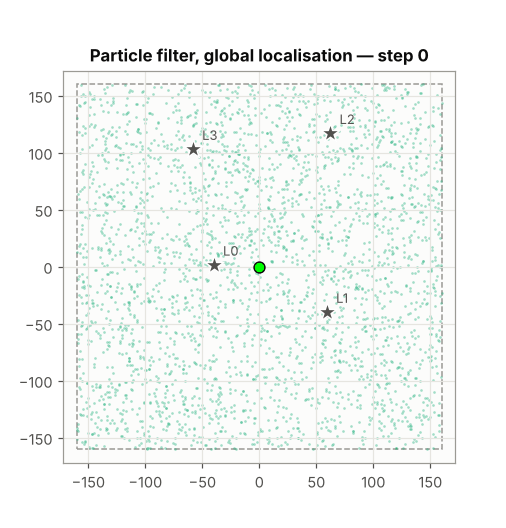
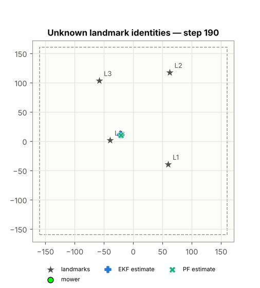

Bayesian Filtering for Robot Localisation
From the Bayes filter to Kalman and particle filters — theory, derivations and Python practicals
A robot lawnmower drives around a lawn. It never does exactly what it is told, and its sensors are noisy: where is it? This free book answers the question with every classical recursive Bayesian filter — grid, Kalman, extended Kalman, unscented Kalman and particle filters — with complete derivations and proofs, exercises with full solutions, and a Python notebook per chapter in which every filter runs on the same simulated world and the same data.


Contents
Part I · Foundations
- The state-space model
- The Bayes filter
Part II · Gaussian filters
- The Kalman filter
- The extended Kalman filter
- The unscented Kalman filter
Part III · Sampling and synthesis
- The particle filter
- Choosing a filter
Appendices
- Notation and default values
- Chord and arc
- Bayesian networks and d-separation
- Differentiating under the integral sign
Notebooks
Each notebook derives its filter, implements it, tests it on the mower, and prints every simulated number quoted in the book. They run in the browser, with nothing to install.
| 00 | The mower's world | Open in Colab |
| 01 | The Bayes filter | Open in Colab |
| 02 | Kalman filter | Open in Colab |
| 03 | Extended Kalman filter | Open in Colab |
| 04 | Unscented Kalman filter | Open in Colab |
| 05 | Particle filter | Open in Colab |
| 06 | Showdown: all filters on four scenarios | Open in Colab |
| 07 | Closing the loop: steering from the filter's estimate | Open in Colab |